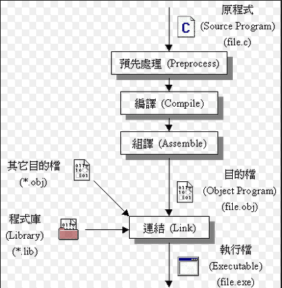

|
ARM Toolchain
|
GNU 跨平台開發工具鍊
為了對任何目標板應用程式的交叉開發,我們需要將各種二元公用程式(binutils)收集成工具鍊(toolchain),
其中包括像是ld(loader), gas(GNU Assembler), ar(archive), C 編輯器(gcc)以及C 程式庫(glibc).

GNU工具鏈（英語：GNU toolchain）是一個包含了由GNU計劃所產生的各種編程工具的集合，由自由軟體基金會負責維護工作。
這些工具形成了一條工具鏈，用於開發應用程序和操作系統。
|
|
回目錄
|
|